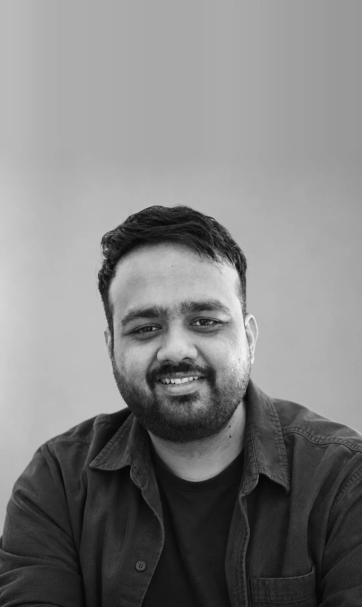
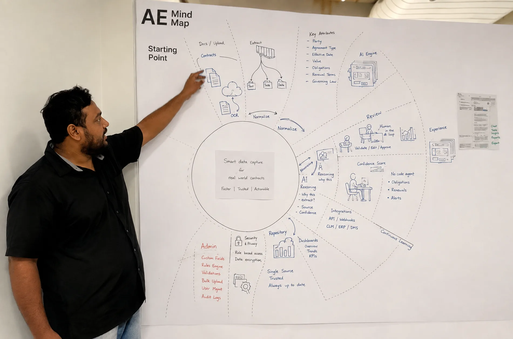
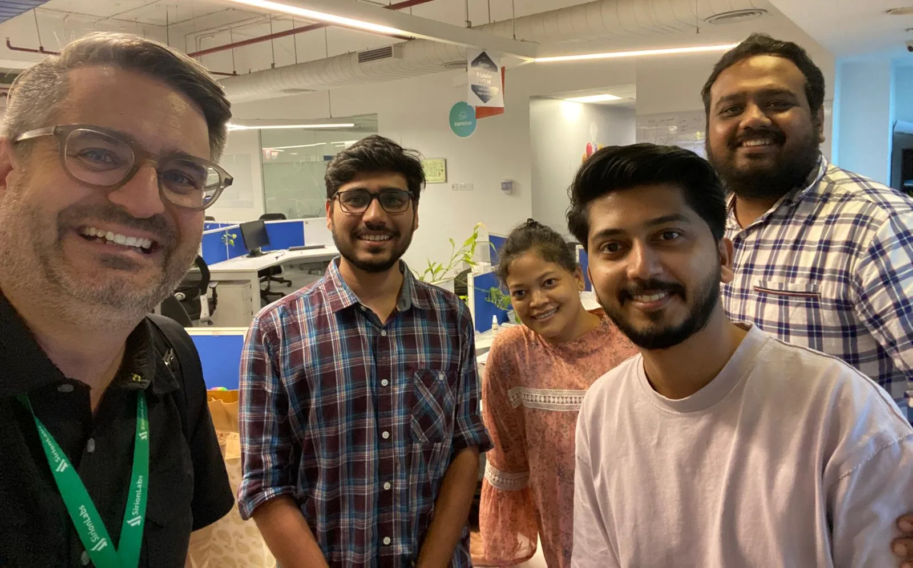

I design for difficult decisions.
I came to product through graphic design, fashion, and a denim label I co-founded. That route still shapes how I work: I look for the structure beneath the interface, reduce what competes for attention, and make difficult decisions easier to see.
- Role
- Senior Product Designer, AI systems
- Now
- Sirion · 5 years
- Experience
- 13 years in design · 6 in product · 3 on AI-native products
- Based in
- Noida, India

A career made of different materials
2013–2017 · NIFT Chennai, Lee Cooper
Composition is not decoration. It decides what gets seen first, what waits and what disappears. A beautiful direction still has to survive production and the hands that make it.
What stayed: hierarchy, typography, rhythm, respect for constraints, and the difference between a concept and a thing that ships.
2019–2021 · Airtel
At scale, one unclear choice becomes millions of moments of friction.
What stayed: behavioural evidence, support that answers what someone meant rather than what they typed, and the knowledge that small interface choices compound.
2021–now · Sirion.ai
AI can answer. A person still has to judge the evidence, consequence and next move.
What stayed: decision systems, provenance, actions you can undo, human checkpoints, and interfaces that stay steady when the model is unsure.
2013–2017 · NIFT Chennai, Lee Cooper
Composition is not decoration. It decides what gets seen first, what waits and what disappears. A beautiful direction still has to survive production and the hands that make it.
What stayed: hierarchy, typography, rhythm, respect for constraints, and the difference between a concept and a thing that ships.
2019–2021 · Airtel
At scale, one unclear choice becomes millions of moments of friction.
What stayed: behavioural evidence, support that answers what someone meant rather than what they typed, and the knowledge that small interface choices compound.
2021–now · Sirion.ai
AI can answer. A person still has to judge the evidence, consequence and next move.
What stayed: decision systems, provenance, actions you can undo, human checkpoints, and interfaces that stay steady when the model is unsure.
How I work now
01 · What do I believe?
Hypothesis
I sit with the people doing the work and write down what I think is true, before I draw anything.
02 · Make it real
Build
A working prototype in HTML, built with AI tools, so people react to the real thing instead of a picture of it.
03 · What happens?
Test
The people who do the work try it on their own tasks. What they do counts for more than what they say.
04 · Change it
Iterate
Change the solution, not the slide. Then start the next round.


Lightning Talk · UX India 2023, Bengaluru
This idea was picked for UX India 2023
My concept for AI-assisted contract redlining and review was selected for a Lightning Talk at UX India 2023 in Bengaluru. It pointed reviewers to the risky parts of a contract, suggested fixes, and drafted replacement clauses. The initial concept and the talk were mine; I didn’t work on the version that later shipped.
Experience
- 2021 – nowSenior UX Designer · Sirion.ai
Enterprise contract management, used by global legal teams.
- 2019 – 2021UX Designer · Bharti Airtel
Airtel Thanks, one of India’s largest consumer apps.
- Aug – Nov 2019UI/UX Designer · Think Matra
- Nov 2018 – Jul 2019Senior Creative UI Designer · Great Place to Study
- Feb 2017 – Oct 2018Co-founder and Creative Director · Zhero Denim
- Jun 2013 – Feb 2017Graphic and Product Designer · Lee Cooper
Bachelor of Design, NIFT Chennai · Executive Development Programme in Strategy and Leadership, XLRI Delhi-NCR (2025–26) · Design Thinking, Stanford Graduate School of Business (online).
Outside work
Some of it I learn at home. My daughter rarely explains where an experience failed. She pauses, tries something else, or leaves. It left me a sharper eye for where confidence breaks, and respect for what people do instead of what they say.
Amrit Kumar